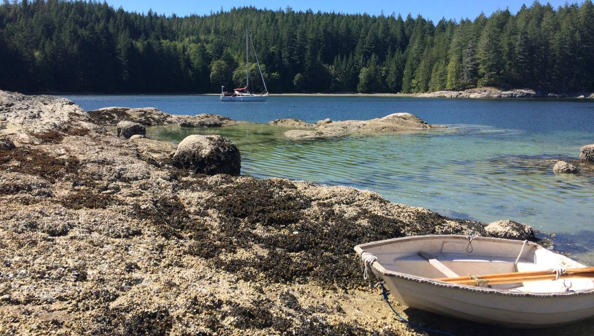
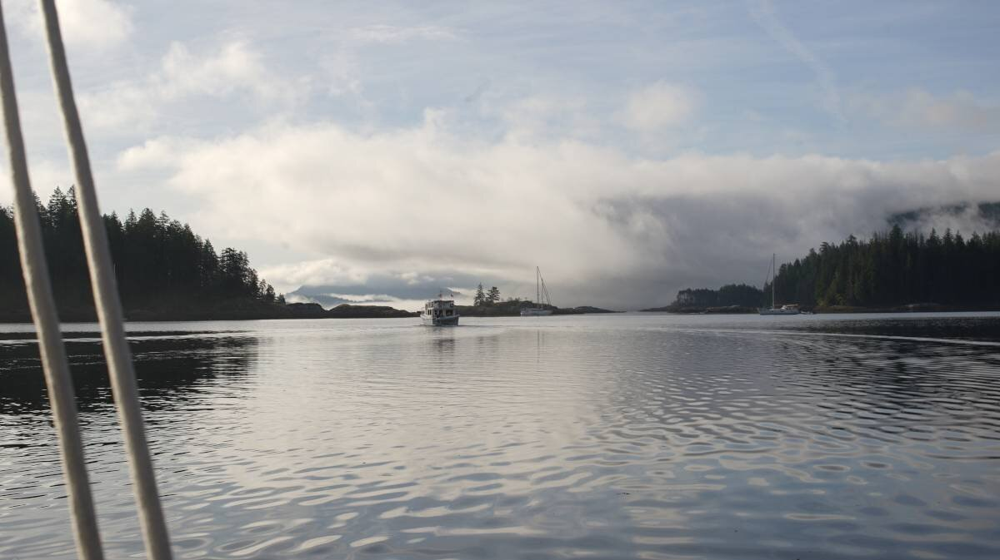
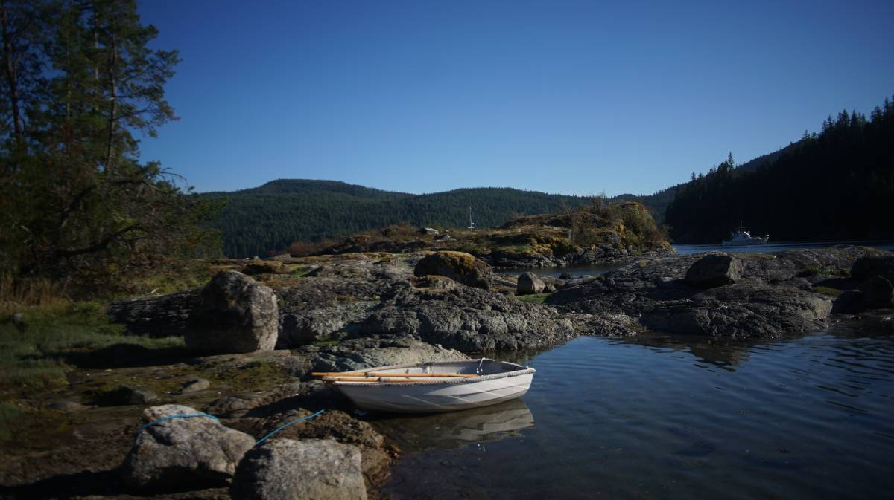
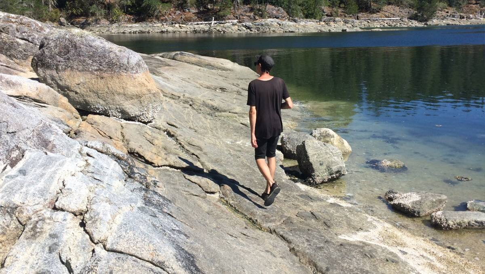
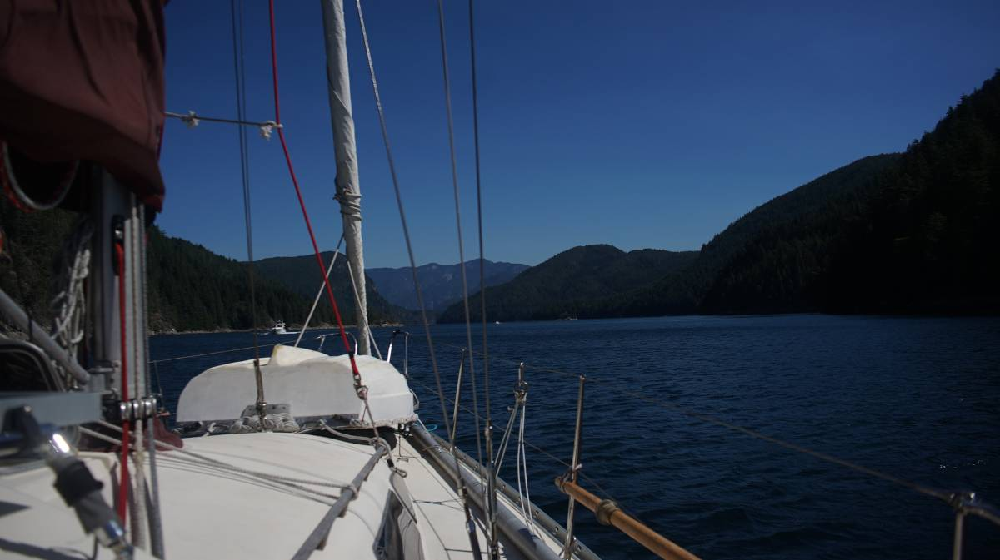

octopus islands
Note. Land acknowledgements to come, when we have more bandwidth to properly research this area's rightful nations/bands.
We left heriot bay on August 11th 2023 at 1100 to catch slack tide at Beazley Passage at 1420. We sailed up Hoskyn Channel under a small jib, going at a slow speed of 2 knots to delay our arrival to the pass so as to not arrive too early.
Beazley Passage
Beazley Passage is part of Surge Narrows, it is a set of mean rapids that guards the entrance to the Octopus Islands. The current can run very fast (water can flood at a speed of 12 knots). Unlike other rapids in the area, there is only one stream to worry about, make it easier than some of the other rapids in the area (there is less current over a shorter distance with less turbulence). A thing to remember is that in these waters, the tide floods south, and ebbs north.
Current from this pass is felt from the SE end of Welsford Island and extends NW through the Beazley Passage, where there is the most current, and on to Surge Narrows between Antonio Point and Quadra Island.
Quick notes:
- Max flood: 12 knots
- Direction of flood: SE
- Slack water lasts 5-11 minutes
Notes for transiting on an ebb tide: Keep close to the west side of the pass, following along Peck Island until clear of it to avoid turbulence around Tusko Rock. Tusko Rock is submerged at high tide, but dries at low tide.
Notes for transiting on a flood tide: There's a strong deflection off the SW part of Sturt Island, which generates a lot of turbulence in the shear zone crossing the pass. Working the back eddy and crossing that shear zone isn't recommended, because the pass is too narrow and there isn't enough room to recover.
Anywhere between Mitlenatch Island in the Strait of Georgia, the water floods and ebbs as it should, but all water above that point behaves differently due to how long Vancouver Island is, and because of all of the islands and long fjords nestled between it and mainland BC.
Note. We referred to the CHS current tables Vol. 6 and looked at the Beazley Passage current station to find the time for slack. Navionics doesn't give the same data as the current tables, but the time of slack was very close (we prefer to look at the CHS tables).
Transiting Beazley Passage
Conditions: We had wind from the S going up Hoskyn Channel, but it died just a few nautical miles past Sheer Point. We had no wind to contend with when near the pass. It was grey that day, and we were aiming to take the pass at the turn from a flood to an ebb (riding it north) on the height of a neap tide.
We arrived south of Peck and Sturt Island near slack tide, but found many other boats on the north end of the pass waiting to come through. It is common courtesy to wait for boats catching the last of the favorable tide through first, so we idled on the south end for ages, waiting for all 8 boats to pass. Slack was longer because we chose to transit on a neap tide, tidal exchange isn't as large on a neap tide, and so the current doesn't switch as fast, or as violently.
We and another boat were waiting on the south side, but our companion left to try and transit northbound while southbound boats were still coming through (not a super courteous thing to do). In the end, it was only us waiting on that side of the pass. Beazley Passage is wider than it appears, but most boats file in one at a time in the centre channel.
A motor boat transiting through warned us that their friend was coming in behind them, towing two large dinghies. It took ages for them to come through, and we wondered then why people thought it a good idea to tow such large boats. Prior to this boat coming through, we had heard a message on the radio from a 50-ft boat, saying they were transiting through southbound, and we assumed this was that boat (it appeared to be that size).
When the boat towing the dinghies finally made it through, we announced our passing on the radio and proceeced into Beazley Passage. Unfortunately, the radio call had been for yet another 50-footer (the one with the 2 dinghies hadn't made a call), one we had not seen trailing way back near Antonio Point. It came speeding in at the same time as us. Because there wasn't much current, it was really no problem at all, but it was a bit disconcerting to brush shoulders with such a big boat. The captain of the boat wasn't pleased with us, but they also didn't hail us on the radio to make sure we knew they were coming. They made their radio call very early, way before the dinghy-towing boat passed through, further adding to the confusion... most boats have their names written on their stern, making it hard for us to know which boat made what call.
The rest of the transit to the Octopus Islands was uneventful, we glided on calm waters under motor and dropped anchor near the marine park in the western bay (50 16.543, 125 13.977) in about 20 ft of water in a mud and shingle bottom.
Octopus Island Marine Park
The next morning we were greeted by a dim world. We love waking up to an anchorage obscured by fog.
The wind was blowing 25-35 kts on the first day, and seemed determined to keep blowing at that strength for the entirety of our stay. The bay is well protected from wind waves, but gusts still travel over land and make it in here. The anchorage on the east end it more sheltered, but there is also less room, depending on whether or not people stern-tie (no one was stern-tied there when we first got here, there were 5 boats swinging).
We had cell connection here, but only here. We learned there was a tower at Surge Narrows, but we only found reception on those first 2 days, we lost it when we decided to move to Waiatt Bay. Devine rowed all around the Octopus Islands and Waiatt Bay, climbing on top of every little island, but could find no connection.
We anchored in two different spots here, the second time was when we moved back from Waiatt Bay, and dropped anchor near the head of the bay (50 16.695N, 125 13.951W).
This spot offers good protection, but winds above 25 still come roaring through. On the 17th of August we had a night of 35-40 knot winds, and we hardly slept. The anchorage itself is safe, the holding is good, but it is difficult to sleep to the constant cry of the wind.
It was a short row to the many islands in the area. The islands enlargen at low tide, revealing little barnacle encrusted pools, which are fun to row through... it becomes an obstacle course, a game in which you have to avoid the many rocks that are either half-submerged, or lying right below the water.
There is a lot to explore by dinghy, but the walking is best left for the trails at the head of Waiatt Bay.
Waiatt Bay
Two days after anchoring in the marine park, we decided to move Pino at the anchorage at the head of Waiatt Bay, nearest to the trail head so we wouldn't have so far to row.
We dropped anchor (50 15.874'N, 125 15.284'W) near the head of the bay, as planned, and rowed to shore to walk.
There is a short trail leading to Small Inlet on the other side. The trail is gorgeous, full of secondary growth trees. A trail from here leads to Newton Lake, and another somewhere near Granite Bay. We didn't get to walk on either of these trails, mostly because we don't like to be gone long the first day we anchor anywhere new... doing the short trail that day turned out to be a good idea because when we made it back to Pino, the wind got nasty.
The 25-35 kts NW winds funnelled right into the bay from Small Inlet, creating monstrous gusts. We had to put many things away on deck, because the wind was threatening to take them. Despite the gusts, we stayed overnight, but the wind never stopped howling. We left the next day, returning to the more sheltered Octopus Islands because the wind was forecast to rise to 35-40 knots (see above notes).
We would have loved to walk those trails, but it was just too damn windy...
Hole in the Wall
Hole in the wall is yet another set of rapids, lying between Sonora and Maurelle Islands at the western end of a narrow, but long pass, not to be confused with another place on land called Hole in the Wall(we went in 2022) on Vancouver Island.
{kind=link}
We took the narrow pass out of the Octopus Islands instead of the the one we used to come in, location on the south east side. No particular notes on taking it, just watch for shoals and rocks on the way there.
Quick notes:
- Max flood: 12 knots
- Max ebb: 10 knots
- Direction of flood: NE
- Slack water lasts less than 5 minutes
- Eastern end has a max current of 2 knots
We entered through the western end without any issues, catching a flood tide in, 10 minutes before slack. When near we looked ahead with binoculars and didn't see any big disturbances in the water, so we proceeded though a bit earlier.
There were 20-30 knot winds that day, blowing out of the NW. We had a lot of wind at our backs, and so we, and a couple of other sailboats, sailed through the pass. We also went through along with a group of intrepid kayakers.
We passed two anchorages in the pass on the way:
Rapids East on the S side of Sonora, behind a little bight near the western entrance.
Florence Cove on the S side of Maurelle Island, halfway through the pass.
We didn't need to stop at either, but in that kind of wind we thought they looked rather untenable. We wouldn't stop here in strong NW winds. Anchoring here only makes sense anyway if entering from the eastern pass.
Transit back to Von Donop
When exiting the eastern end of Hole in the Wall, you enter Calm Channel. This place is usually devoid of wind, but there was enough to sail with today (must have been howling in Johnstone Strait for the wind to reach here). The wind weakened as we got more and more south of the Rendezvous Islands, and we used the iron wind to take us into hathayim marine park.
We hadn't planned on coming back here again this year, we had thought to try and anchor in Rebecca Spit near heriot bay on Quadra Island, but the NW wind was still blowing too hard and we knew it wouldn't make for a safe anchorage.